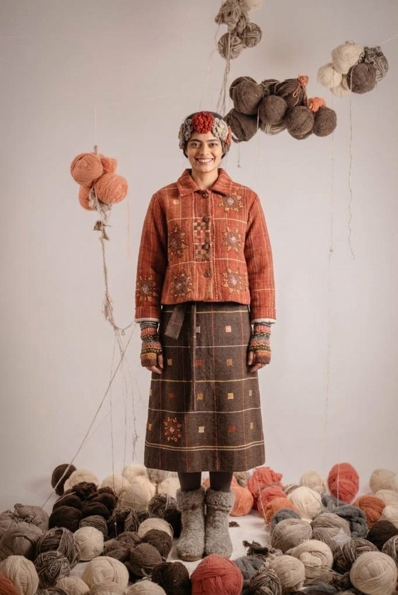

Handcrafted Geo-Tags.
Every step verified.
Scan any product's attached QR code to trace its full provenance — from high Himalayan sheep shearing and botanical dye kettles to master artisan looms.
Certified Heirlooms
Choose any product below to view its 3-step lifecycle or scan its direct QR tag with your mobile camera.

Himachali Jacket
Heritage wool jacket handwoven on pit looms, dyed with walnut rind & madder root, tailored in classic boxy mountain cut.
Himachali Sweater
Colorful patchwork knit sweater handspun on wooden charkhas and hand-knitted by women artisans of Kangra.


Himachali Gloves
Hand-knitted fingerless gloves with 3D crochet floral motifs and rustic sheep patterns in mustard and brown wool.

Himachali Scarf
Traditional handwoven scarf with vibrant geometric Kullu borders and hand-twisted fringe tassels.

Printable Garment Geo-Tags
Attach these verified QR tags directly to the finished garments using hemp twine or wooden toggles. When customers or retail visitors point their camera at the tag, they are instantly transported to the verified story of its creation.